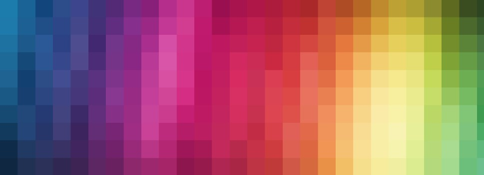
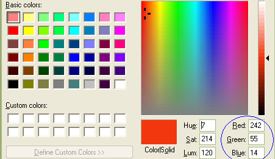

Bildepunkter
Bilete er delt opp i bittesmå delar som me kallar pikslar eller bildepunkt.
Jo fleire punkt biletet er delt opp i, jo høgare er oppløysinga og kvaliteten på biletet.
Bilete med høg oppløysing krev då meir lagringsplass en bilete med lågare oppløysing.
Fargar - RGB
Datamaskinen brukar gjerne 1 og 0 for enkle svart kvitt bilder, men for fargar treng ein fleire tal.
Då er det er vanleg å bruke RGB-verdiar og CMYK-verdiar.
RGB-verdiar blir brukt for trykk på skjerm, mens CMYK-verdiar blir brukt på trykk på papir.
Det er vanleg å oppdele kvar farge i 256 nivåar (0-255).
Lagring og overføring av fargebilete
Datamaskinar brukar meir tid og meir plass på fargebilete.
Tida det tar for eit bilete å bli sendt over eit nettverk er avhengig av datamaskina som sender, datamaskina som mottek og kvaliteten på linja mellom dei.
Datahastigheit målast i bit per sekund.
Kompresjon av bilder
Mediefilar er filar som inneheld bilete, lyd og video, og det kan ta stor plass.
Ved kompresjon kan slike filar ta mindre plass utan at dei blir øydelagde, og uten at vesentleg informasjon går tapt.
Ved tapsfri kompresjon (lossless) er fila blitt mindre i storliek, men me kan likevel gjenskapa ei fil som er identisk med originalen.
Dette blir kalla RLE - Run Length Encoding.
Ved destruktiv kompresjon (lossy) er fila som blir gjenskapt ikkje 100% identisk med originalen.
Ein brukar kunnskapen om kva som er nødvendig å ha med, og fjernar det auget vårt ikkje kan sjå. Biletet blir forenkla, men det kan likevel vere ganske vanskeleg å sjå forskjell mellom den komprimerte versjonen og originalen.